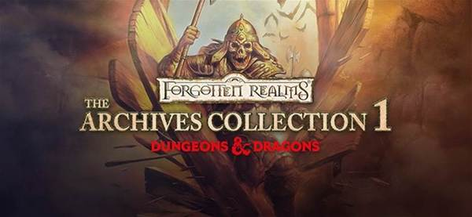
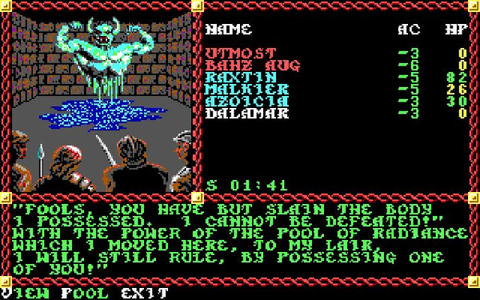
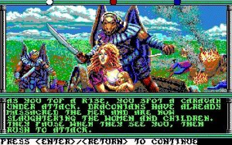
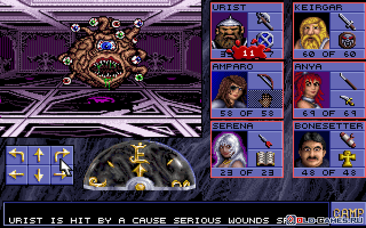
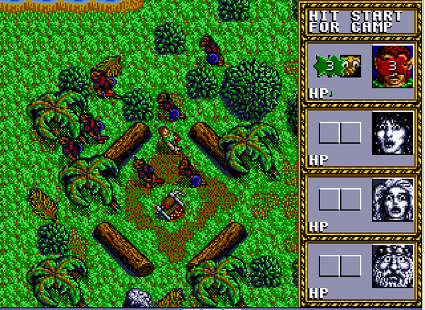
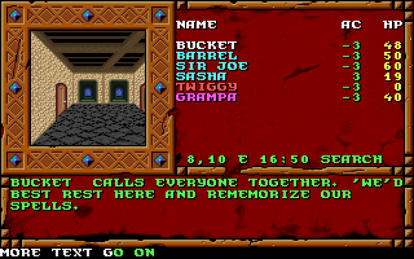

Вселенная "Подземелий и Драконов" в своём изначальном варианте - шикарной настольной ролевой игры - в России как-то не прижилась. Неудивительно - даже на своей родине в США игра почти два десятилетия считалась забавой "полных задротов" и только в последние лет пять-шесть стала относительно приемлемой и среди простых американцев. Особенно умиляет то, что среди новых игроков можно найти даже "четких пацанчиков", решивших попробовать игру после того, как небезызвестный Вин Дизель несколько раз назвал её своей любимой настолкой и признался в наличии среди его многих персонажей охотника на ведьм 8-го уровня, о котором он скоро снимет фильм...
Но о новом расцвете настольного D&D поговорим как-нибудь в другой раз, если будет интересно. А сейчас - время для более популярного в наших широтах формата - компьютерных игр жанра РПГ (помимо них во вселенной выходили beat-them-up'ы, симуляторы полетов на драконах и стратегии, но с настолкой они почти ничего общего не имеют). А таковых по этой вселенной вышло немало.
АЛЯРМ! В описании не попали Demon Stone, Sword Coast Legends, консольные игры и Neverwinter Online. Причина этого - в их полной и абсолютной серости.
ГЛОССАРИЙ НАЧИНАЮЩЕГО D&D'шника:
Сеттинг - вселенная, в которой происходит действие. "Подземелья и Драконы" - это только базовый набор правил, которому подчиняются игроки, а вот собственно вселенных в рамках игры - великое множество. От классически фентезийного Faerun (мира "Забытых Королевств") до модернизированного фентези Eberron'a, урбанистичного Pelennor, готичного Ravenloft и эпично-майндфакового Planescape. Каждый сеттинг добавляет свой свод правил, дополняющий базовый набор.
Раунд - один ход в пошаговой игре или примерно пять секунд в играх на Infinity или Aurora. В настолке - и то, и другое. Обычно, за раунд можно совершить только одну атаку или любое другое действие, но существуют предметы и навыки, которые увеличивают это число.
Первые попытки перетащить ДнД на экраны мониторов и телевизоров произошли в конце 1980-х годов, когда компания SSI выпустила Pool of Radiance, воспроизводившую в игровой манере знаменитый сеттинг Фаэрун. Вместо открытого мира, такие игры предлагали полноценную игрофикацию официальных приключений, поставляемых вместе с настольной игрой, и отличались крайне строгим следованием правилам и скупостью внебоевых моментов. Из-за этого управление было предельно простым, да и вообще играли в них в основном для того, чтобы своими глазами увидеть давно пройденные модули. По моим меркам, все эти игры играбельны до сих пор, хотя поставленный на рельсы геймплей может быстро надоесть современным геймерам. А что поделать, жанр - партийный данжен-краулер - обязывает...
Основными сеттингами той эпохи стали Dragonlance и Faerun, хотя были и несколько модулей происходивших в Ravenloft, а также менее известных сеттингах - Mystara, Spelljammer, Al-Qadim и Birthright. Несмотря на это разнообразие, друг от друга все эти игры чувствуются одинаково - боевка во всех сеттингах не особо отличается, так что различия в основном только визуальные.
Из всего многообразия выделить стоит следующие:
Pool of Radiance, 1988, SSI. 
Первая игра по существующему сеттингу, что тут сказать. Несколько примитивная даже в сравнении с товарищами, но для своего времени была великолепна. Имеет несколько сиквелов, которые выходили вплоть до 1993.
Champions of Krynn, 1990, SSI. 
Те же яйца, но в DragonLance. Отличий немного, если не считать абсолютно новой графики и сюжета. Серьезно механику будут менять только в сиквелах, которых тоже хватает.
Eye of the Beholder, 1992, Westwood 
Да, Westwood. Та, что Nox, Command & Conquer, Dune II, The Legend of Kyrandia, Red, мать его так, Alert - Westwood! Eye of the Beholder и его сиквел считаются лучшими ранними данжен-краулерами вообще, так как авторам удалось достигнуть идеального баланса между сюжетом, загадками и боевкой, что вполне компенсирует заезженный сеттинг - Фаэрун.
Также олдфагам будет интересен DragonStrike от тех же Westwood, вышедший годом раньше. Это не РПГ, а аркада, но довольно неплохая.
Warriors of the Eternal Sun, 1992, Westwood. 
Первая (и единственная) jRPG в сеттинге D&D, вышедшая сначала на Sega Genesis. Очень хороша, но жуткая системая сохранений убила все шансы на её популярность. Сеттинг на этот раз довольно малоизвестный - Мистара, более дружелюбная и красочная версия "высокого" фентези.
Отличается очень странным графическим решением - односторонней правильной изометрией. С непривычки смотрится довольно вырвиглазно, но со временем привыкаешь.
Treasures of the Savage Frontier, 1992, SSI. 
Последняя РПГ от SSI по "Подземельям и Драконам". Не хорошая, не плохая, просто последняя из почти двух десятков. Сеттинг - Фаэрун.